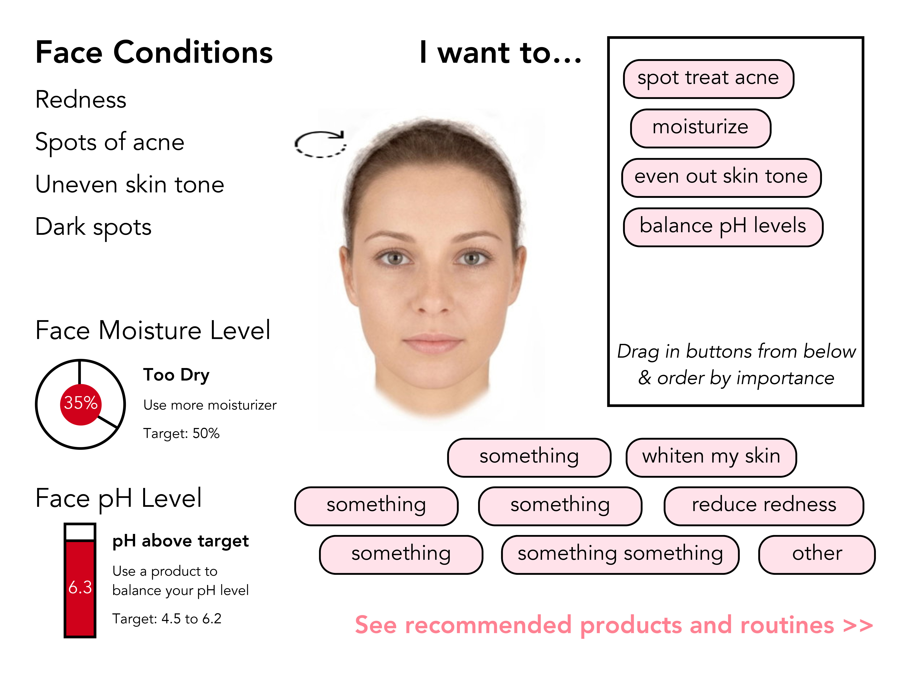
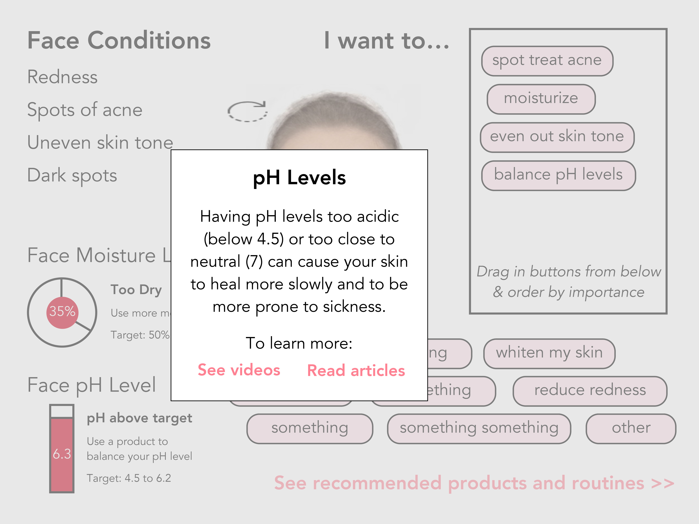
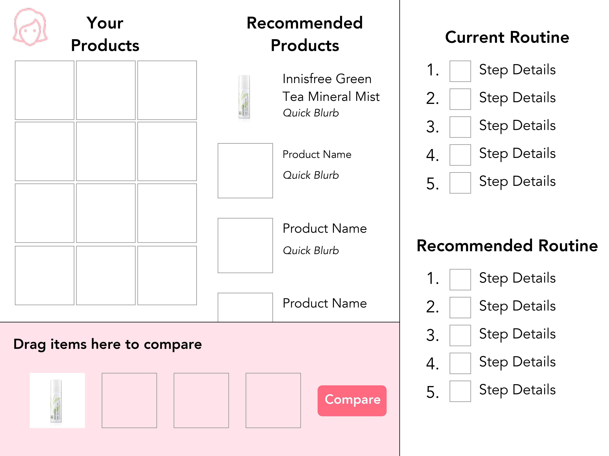
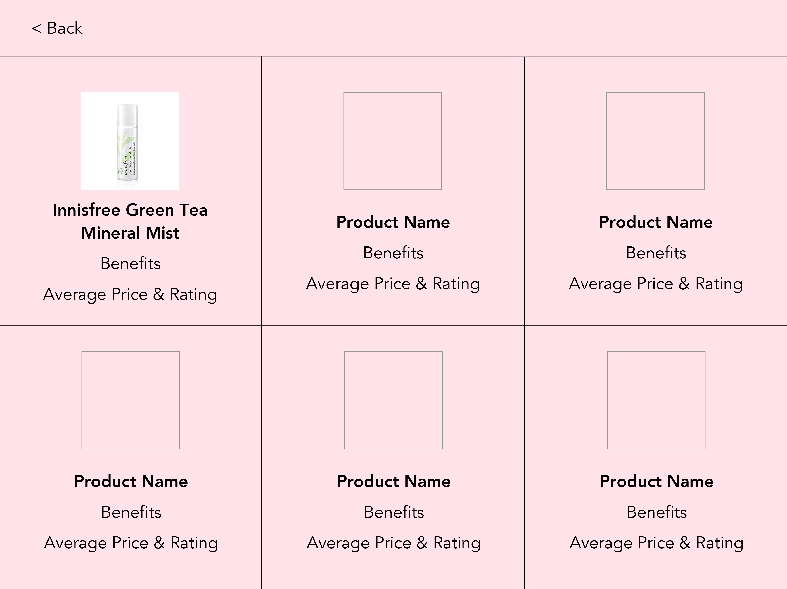
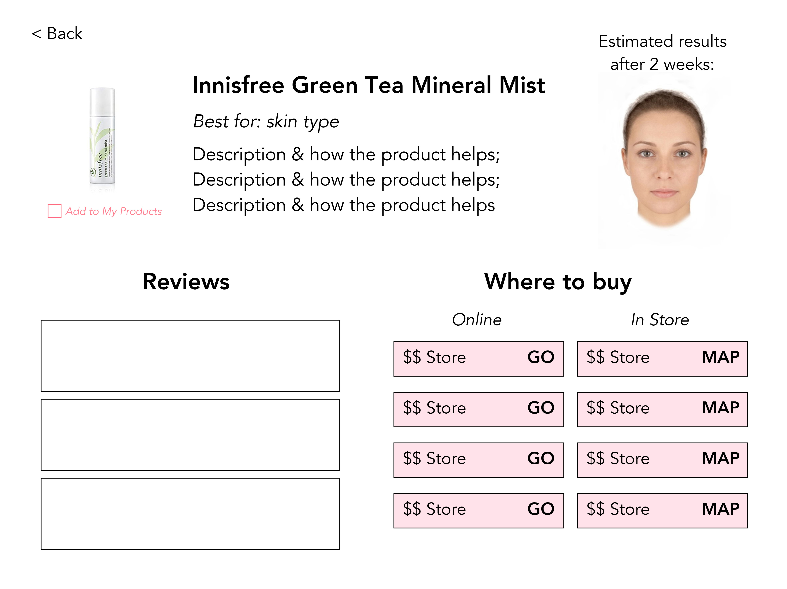
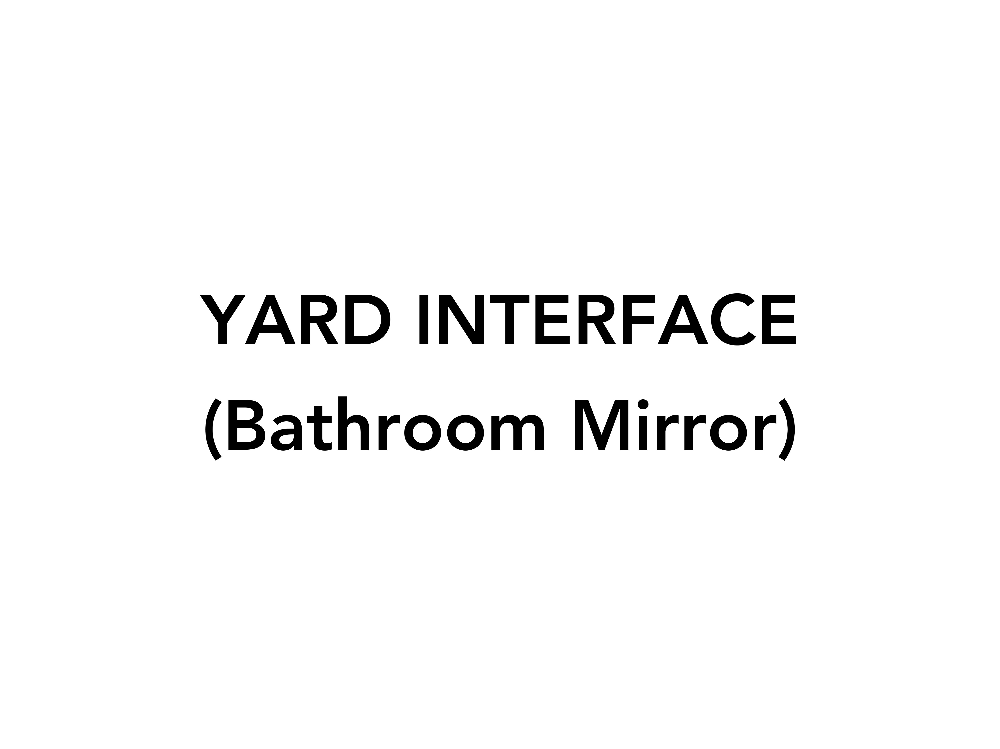
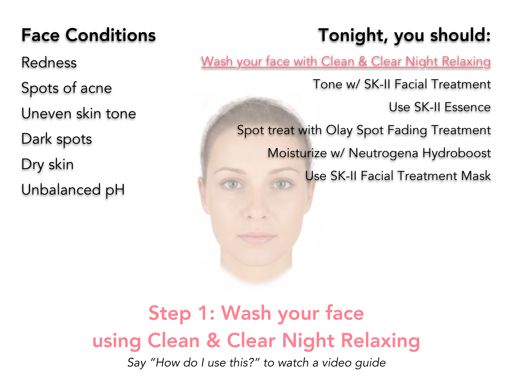
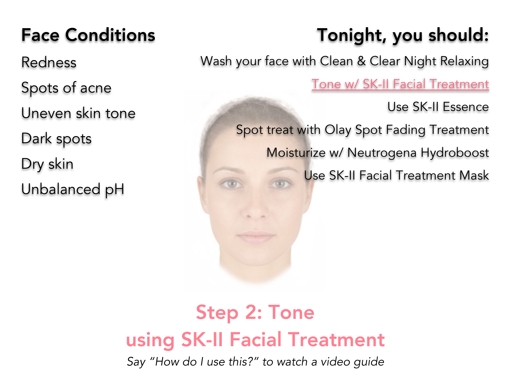
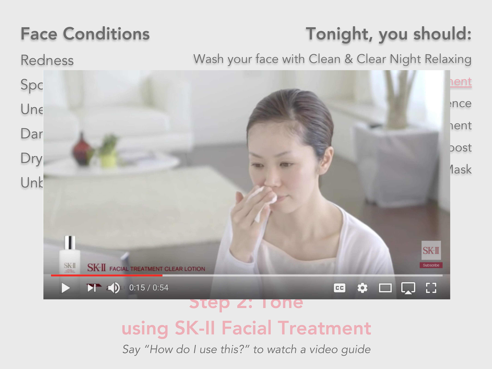

PERSONA
Kelley puts great effort into taking care of her skin because she wants to prevent signs of aging and skin cancer. Since there are so many different products out there and because everyone's skin reacts differently and is constantly changing, she'd like to know which of her products she should use and when as well as which products she should get that would best match her skin.
INCH
Throughout the day, Kelley sometimes forgets to take note of weather conditions and to apply skin products accordingly and sometimes just isn't sure what her skin condition is.
This inch interface is a smart watch that can be used to measure the moisture (humidity) level and the pH level of her skin. Based on weather conditions as she goes about her day (e.g., humid, dry and windy, strong sun rays), it can also remind her to use certain skin care products to help keep her skin in top condition.

FOOT
Since different people's skin reacts differently to different products and since her skin conditions are always changing, Kelley would like to know which products she should use for her skin, whether her own or products she can buy, and which routine she should use at any given time.
After using the inch and yard interfaces to scan her face, her face information is loaded onto the foot interface where she can personalize the suggested skin care routine even more by specifying what she wants to improve first and what her skin care goals are. Using the diagnosis of her face's skin conditions and taking into consideration the products she already has and which works for her, she will be given recommendations as to which products she could buy that would better match her skin.





YARD
Since there are so many steps to her skin care routine, Kelley sometimes forgets a step if she's really tired and sometimes is just unsure in what order she should use her products for optimal results.
Since skin care is often done in front of the bathroom mirror, that is where the yard interface will be. Whenever she stands in front of the mirror, it scans her face (it knows it's her and not a guest since it scans her face) and gives feedback based on what her skin condition is at the moment (e.g., black heads, dark spots, acne, wrinkles, oily) and suggests which of her products she should use and what routine she should follow. To give a better diagnosis, she'll be asked to use the inch interface to measure her face's moisture level and pH level. From there, it guides her as she goes through the skin care routine for that moment.



